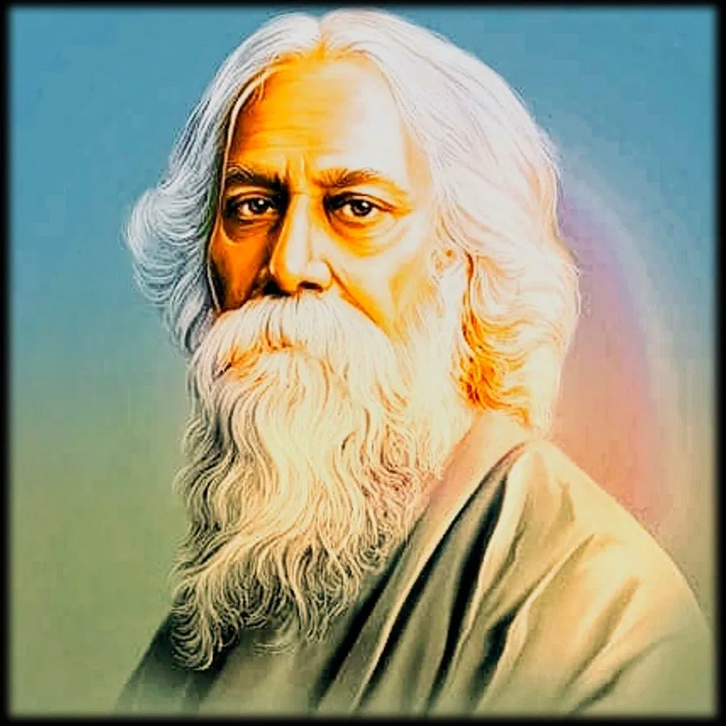

Rabindranath Tagore
"Visionary poet, philosopher, and the first Asian Nobel laureate in Literature."

"Rabindranath Tagore – The Bard of Bengal, whose words painted freedom, whose soul sang peace." 🌿📜✨
Rabindranath Tagore (1861–1941) was a Bengali polymath – poet, philosopher, artist, and educator – who reshaped Bengali literature and music. He became the first non-European to win the Nobel Prize in Literature in 1913 for his book of poems, Gitanjali.
Major Achievements
- Won the Nobel Prize in Literature (1913)
- Composed the national anthems of India and Bangladesh
- Founded Visva-Bharati University
- Author of acclaimed works like *Gitanjali*, *The Home and the World*, and *Kabuliwala*